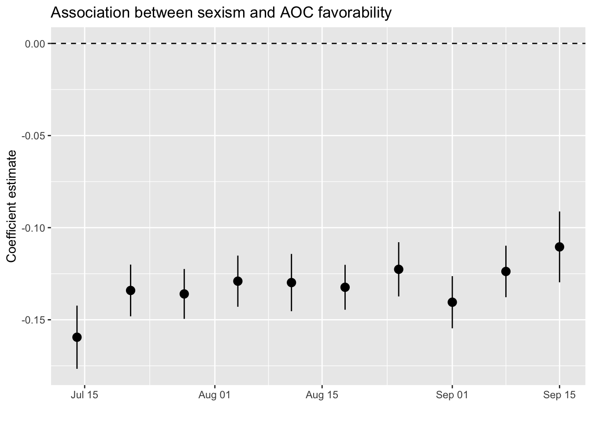
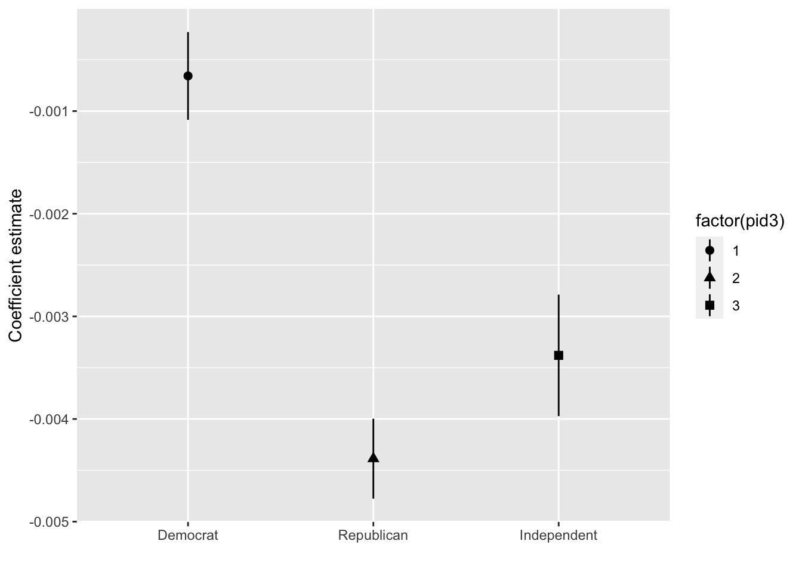
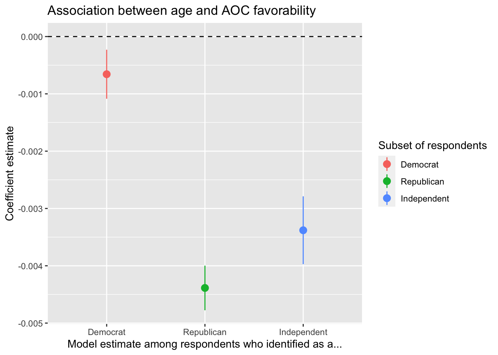
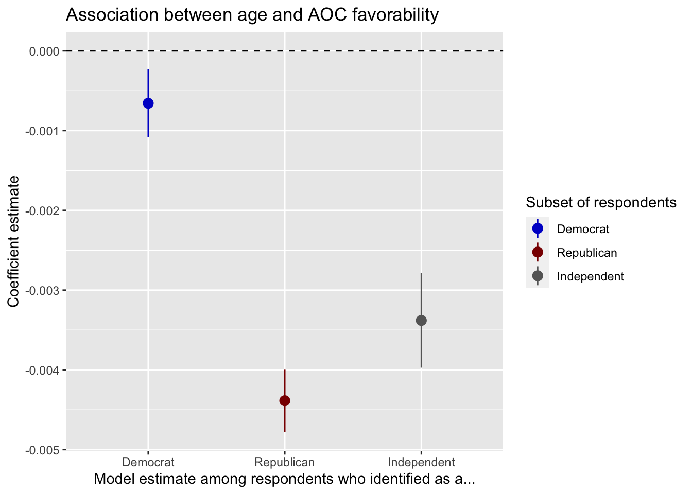
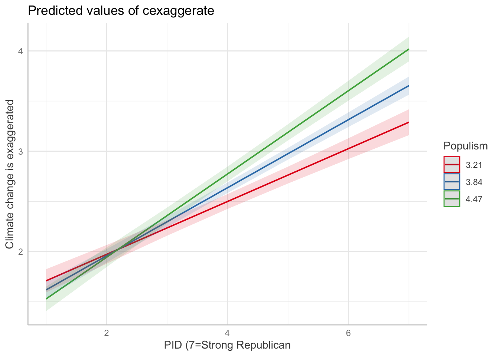

library(broom)6 Visualizing statistical models
A more accurate title, of course, woudl be “visualizing outputs from statistical models”.
We’ll be using this package to help us out:
6.1 Nationscape data
# Read in Nationscape survey data:
library(tidyverse)
library(labelled)
a <- readRDS("data_nationscape2019/Nationscape_first10waves.rds")6.1.1 Association between sexism and AOC favorability over time
We estimate 10 separate model, aka “rolling regressions”.
We run one model for each value of week, and create a tibble thanks to the tidy()function:
a %>% filter(
!is.na(aoc_Favorable),
!is.na(gender_att3_by1SD)) %>%
group_by(week) %>%
do(broom::tidy(lm(aoc_Favorable ~
gender_att3_by1SD +
age + college_grad +
White + Black + Hispanic, data = .))) %>%
# Which coefficient we wish to pull:
filter(term == "gender_att3_by1SD") %>%
ggplot(aes(x=week,y=estimate,
ymax = estimate + 1.96*std.error,
ymin = estimate - 1.96*std.error)) +
geom_pointrange(position = position_dodge(width = .45), size=.6) + labs(x="",y="Coefficient estimate",
color="Subset of respondents") +
ggtitle("Association between sexism and AOC favorability") +
geom_hline(yintercept=0, linetype=2) 
It seems that the correlation between sexism and (lower) favorability of AOC is quite stable.
aoc_Favorable <- a %>% filter(
!is.na(aoc_Favorable),
!is.na(gender_att3_by1SD)) %>%
group_by(pid3) %>%
do(broom::tidy(lm(aoc_Favorable ~
gender_att3_by1SD +
age + college_grad +
White + Black + Hispanic, data = .)))6.1.2 Demographics
We can now plot any set of coefficients, of course.
Let us try to see whether age correlates negatively with AOC’s favorability, as we might perhaps suspect:
aoc_Favorable %>% filter(pid3 <= 3 & term == "age") %>%
ggplot(aes(x=as_factor(pid3),y=estimate,
ymax = estimate + 1.96*std.error,
ymin = estimate - 1.96*std.error,
shape = factor(pid3))) +
geom_pointrange() + labs(x="",y="Coefficient estimate",color="")
Let’s improve the design a little bit:
aoc_Favorable %>% filter(pid3 <= 3,term == "age") %>%
ggplot(aes(x=as_factor(pid3),y=estimate,
ymax = estimate + 1.96*std.error,
ymin = estimate - 1.96*std.error,color=as_factor(pid3))) +
geom_pointrange(position = position_dodge(width = .45), size=.6) + labs(x="Model estimate among respondents who identified as a...",y="Coefficient estimate",
color="Subset of respondents") +
ggtitle("Association between age and AOC favorability") +
geom_hline(yintercept=0, linetype=2) 
Need to fix the party colors:
aoc_Favorable %>% filter(pid3 <= 3,term == "age") %>%
ggplot(aes(x=as_factor(pid3),y=estimate,
ymax = estimate + 1.96*std.error,
ymin = estimate - 1.96*std.error,color=as_factor(pid3))) +
geom_pointrange(position = position_dodge(width = .45), size=.6) + labs(x="Model estimate among respondents who identified as a...",y="Coefficient estimate",
color="Subset of respondents") +
ggtitle("Association between age and AOC favorability") +
geom_hline(yintercept=0, linetype=2) +
scale_color_manual(values = c("blue3","darkred","grey40"))
6.2 AJPS (2021) data
library(tidyverse)
library(haven)
library(labelled)
# READ IN RECODED DATA
source("data_AJPS2021/0_ajps_recode.R")We now turn again to the dataset posted by Uscinski et al. (2021).
# CT seems correlated with Trump FT among Dems
# Pop seems correlated with Trump FT among Reps
# Manich. correlated with Trump FT among all
int1 <- lm(cexaggerate ~ pid*pop_Index, data=d3)
int2 <- lm(trumpft ~ pid*pop_Index, data=d3)
int3 <- lm(trumpft ~ pid*consp_Index, data=d3)
int4 <- lm(trumpft ~ pid*goodevil + consp_Index + pop_Index, data=d3)ggeffects::ggeffect(int1, terms=c("pid","pop_Index")) %>% plot() +
labs(y="Climate change is exaggerated",
x="PID (7=Strong Republican",color="Populism")